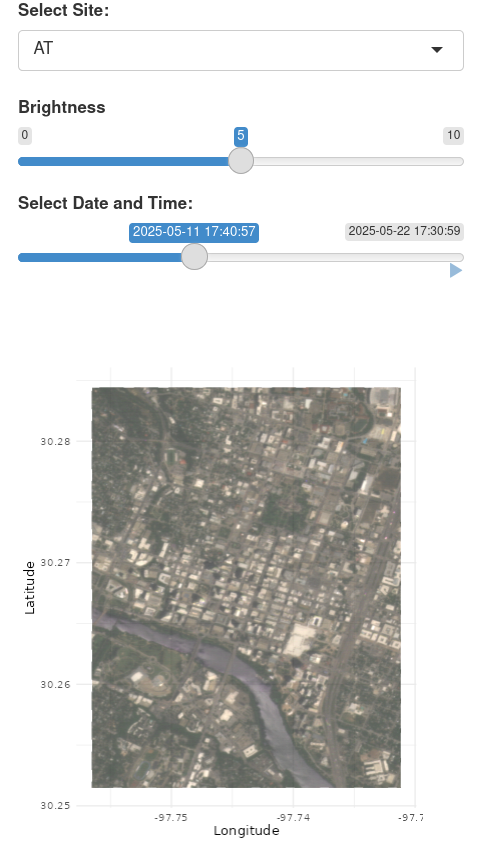

Summary
Source:paper.md
The BatchPlanet R package offers a reproducible and scalable workflow for accessing and processing PlanetScope satellite imagery. It is designed for environmental researchers to efficiently perform spatiotemporal analysis on high-resolution remote sensing data. The package streamlines imagery ordering and downloading with the PlanetScope API, retrieval and cleaning of pixel-level time series, calculation of vegetation indices like the Enhanced Vegetation Index (EVI), and calculation of start/end of season metrics. This tool is particularly valuable for research involving large volumes of imagery across multiple sites and extended time periods.
Statement of Need
PlanetScope imagery provides global, high-resolution (~3-meter), near-daily data, making it valuable for scientific research and monitoring of phenology [@moon2021phenology], land use change, disaster impacts, and more. While the Planet API facilitates access [@planet2017api], using this data remains challenging due to complex API interactions, limits on large-volume data downloads, and non-trivial processing workflows, which can hinder reproducibility.
Existing options include the official Planet Python SDK, cloud-based platforms like Sentinel Hub and Google Earth Engine (GEE), and the R package planetR [@bevington2024planetr]. However, the Python and JavaScript used by the first three platforms may be less familiar to R users. Cloud platforms also restrict user control over processing environments and local data storage. Furthermore, existing tools typically require users to write extensive custom scripts for batch downloading and processing across multiple sites, a process often limited by computing and storage resources. BatchPlanet addresses these gaps by providing an R-native tool for batch access and processing of PlanetScope imagery (Table 1). Its streamlined, parallelized functions are designed for scalability, transparency, and reproducibility in scientific data pipelines. This package has supported peer-reviewed research in predicting reproductive phenology in wind-pollinated trees [@song2025phenology].
| Feature / Tool | Planet Python SDK | Sentinel Hub | Google Earth Engine (GEE) | planetR (Bevington) | BatchPlanet |
|---|---|---|---|---|---|
| Primary Language | Python | Python | JavaScript / Python | R | R |
| Processing Environment | Local/Cloud | Cloud | Cloud | Local | Local |
| Data Control & Reproducibility | High | Moderate | Low | High | High |
| Batch Processing | Via scripting/CLI | Supported for enterprise users | Via scripting | Via scripting | Streamlined |
| Time Series Analysis Tools | Not supported | Limited | Supported | Not supported | Supported |
| Interactive Visualization | Not supported | Limited | Supported | Not supported | Supported |
Key Features
The package is tailored for researchers and practitioners who:
- Conduct time series analyses across spatially dispersed monitoring sites.
- Work primarily in R and seek alternatives to Python-based tools.
- Prioritize reproducibility in remote sensing workflows.
- Use high-performance computing (HPC) infrastructure.
- Need interactive visualization of PlanetScope imagery and processed data products.
A major hurdle in using PlanetScope data is the volume of data and the risk of hitting Planet API rate limits during mass downloads. This could happen, for example, when a phenological study requires years of time series over multiple locations. BatchPlanet provides solutions for streamlined batch ordering and downloading. It searches for images by month and automatically splits large requests into smaller orders, ensuring complete data retrieval without hitting API rate limits. It enables users to specify multiple, spatially distant sites, allowing for efficient, parallelized downloading of only the relevant imagery, minimizing unnecessary data volume.
In addition to ordering and downloading, BatchPlanet facilitates the entire R-native workflow for PlanetScope imagery processing, with a focus on temporal analysis. These include functions to retrieve pixel-level time series data, clean reflectance time series, calculate the Normalized Difference Vegetation Index (NDVI) and Enhanced Vegetation Index (EVI) [@huete2002overview], and compute start/end of season metrics (the day-of-year when the specified index first crosses specified thresholds) [@moon2021multiscale]. Apart from the streamlined batch processing functions, BatchPlanet provides individual functions for key steps of the workflow, allowing users to customize their data processing pipelines. BatchPlanet also enables interactive visualization of true color images and EVI time series (Fig. 1, 2).
These batch functions significantly accelerate the process. For example, images for an approximately 9 km^2 area over one month were downloaded in 6.7 seconds. The total downloading time for a year’s worth of images is comparable due to parallelization across months. Time series retrieval (reflectances, quality masks, and metadata) for 100 coordinates from one month of downloaded images took only 20.9 seconds, which can be parallelized across sites and coordinate groups.

BatchPlanet package, showing a true color image in part of Austin, USA, captured on May 21, 2025.![Figure 2. Enhanced Vegetation Index (EVI) for three trees in San Joaquin Experimental range (SJER) NEON site with start/end of season metrics annotated, calculated and visualized using the BatchPlanet package. Points are EVI values calculated from PlanetScope reflectances at the coordinates of the trees of interest, summarized with smoothed lines. Green shades indicate the periods from minimum EVI in the winter to maximum EVI in the summer. Sets of three vertical green lines are the time points when smoothed EVI crosses 30%, 40%, and 50 % of the range between minimum and maximum EVI, which can serve as possible start of season metrics.](inst/extdata/figures/Fig2.png)
BatchPlanet package. Points are EVI values calculated from PlanetScope reflectances at the coordinates of the trees of interest, summarized with smoothed lines. Green shades indicate the periods from minimum EVI in the winter to maximum EVI in the summer. Sets of three vertical green lines are the time points when smoothed EVI crosses 30%, 40%, and 50 % of the range between minimum and maximum EVI, which can serve as possible start of season metrics.Example Usage
Install package in R and load package.
install.packages('BatchPlanet',
repos = c('https://yiluansong.r-universe.dev',
'https://cloud.r-project.org'))
library(BatchPlanet)To facilitate adoption and ensure reproducibility, BatchPlanet provides three vignettes that demonstrate its full feature set: Getting started workflow, Customization and advanced usage, and Miscellaneous time series processing tools. We highlight some key functions below.
Read example coordinates.
df_coordinates <- read.csv(
system.file("extdata/NEON/example_neon_coordinates.csv",
package = "BatchPlanet")
)
visualize_coordinates(df_coordinates)Set download parameters and data directory.
setting <- set_planetscope_parameters(
api_key = set_api_key(),
item_name = "PSScene",
asset = "ortho_analytic_4b_sr",
product_bundle = "analytic_sr_udm2",
cloud_lim = 0.3,
harmonized = TRUE
)
download_sample_data()
dir_data <- "sample-data"
dir_data_NEON <- file.path(dir_data, "NEON")Order and download imagery.
Note: Before proceeding to downloading, users should inspect their Planet account to confirm that all orders reached a “success” status. Failed orders will result in errors during downloading. Refer to the package vignette for troubleshooting tips when orders fail.
order_planetscope_imagery_batch(
dir = dir_data_NEON,
df_coordinates = df_coordinates,
v_site = c("HARV", "SJER"),
v_year = 2024,
setting = setting
)
download_planetscope_imagery_batch(
dir = dir_data_NEON,
setting = setting,
num_cores = 12
)
visualize_true_color_imagery_batch(
dir = dir_data_NEON,
df_coordinates = df_coordinates
)Retrieve time series at coordinates of interest.
retrieve_planetscope_time_series_batch(
dir = dir_data_NEON,
df_coordinates = df_coordinates,
num_cores = 12
)
df_ts <- read_data_product(
dir = dir_data_NEON,
product_type = "ts"
)
visualize_time_series(
df_ts = df_ts,
var = "green",
ylab = "Green reflectance",
facet_var = "site",
smooth = F)Clean time series and calculate NDVI and EVI.
clean_planetscope_time_series_batch(
dir = dir_data_NEON,
num_cores = 3,
calculate_index = c("ndvi", "evi"),
filter_range = list(ndvi = c(-1, 1), evi = c(0, 1))
)
df_clean <- read_data_product(
dir = dir_data_NEON,
product_type = "clean"
)
visualize_time_series(
df_ts = df_clean,
var = "evi",
ylab = "EVI",
facet_var = "site",
smooth = T
)Calculate start and end of season metrics.
df_thres <- set_thresholds(
thres_up = c(0.3, 0.4, 0.5),
thres_down = NULL
)
calculate_season_metrics_batch(
dir = dir_data_NEON,
v_site = "SJER",
v_group = "Quercus",
df_thres = df_thres,
var_index = "evi",
num_cores = 12
)
v_id <- c("NEON.PLA.D17.SJER.06001",
"NEON.PLA.D17.SJER.06337",
"NEON.PLA.D17.SJER.06310")
df_doy <- read_data_product(
dir = dir_data_NEON,
product_type = "doy"
)
df_doy_sample <- df_doy[df_doy$id %in% v_id, ]
df_evi <- read_data_product(
dir = dir_data_NEON,
product_type = "clean"
)
df_evi_sample <- df_evi[df_evi$id %in% v_id, ]
visualize_time_series(
df_ts = df_evi_sample,
df_doy = df_doy_sample,
var = "evi",
ylab = "EVI",
facet_var = "id",
smooth = T
)Acknowledgements
Yiluan Song was supported by the Eric and Wendy Schmidt AI in Science Postdoctoral Fellowship, a Schmidt Sciences program. Kai Zhu and Yiluan Song were supported by the National Science Foundation [grant numbers 2306198 (CAREER)]. We thank the Planet team for providing access to their API.